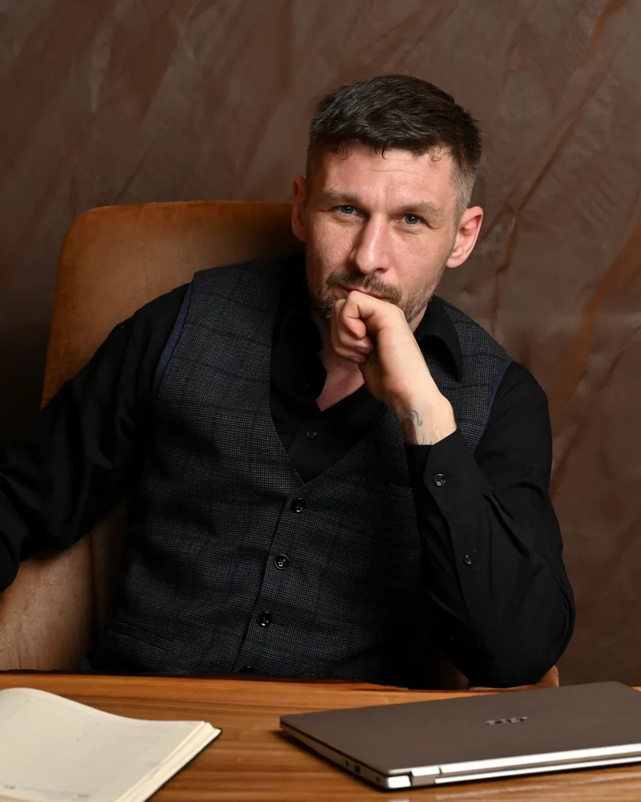
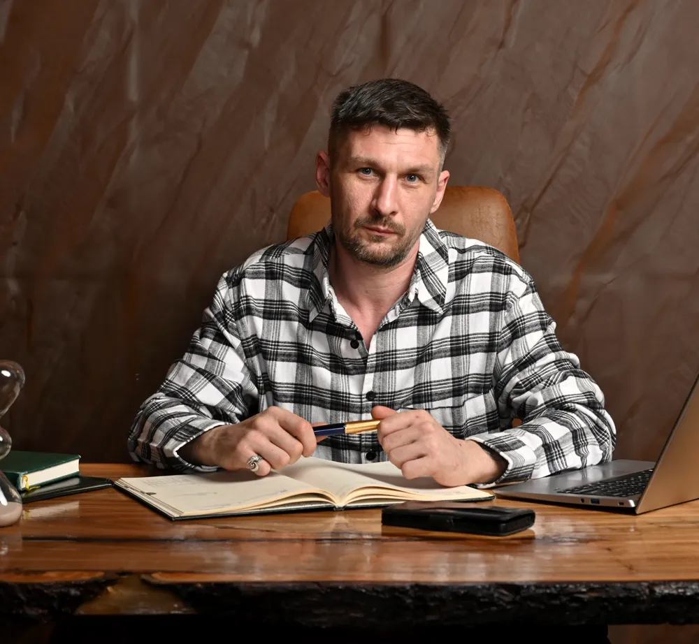
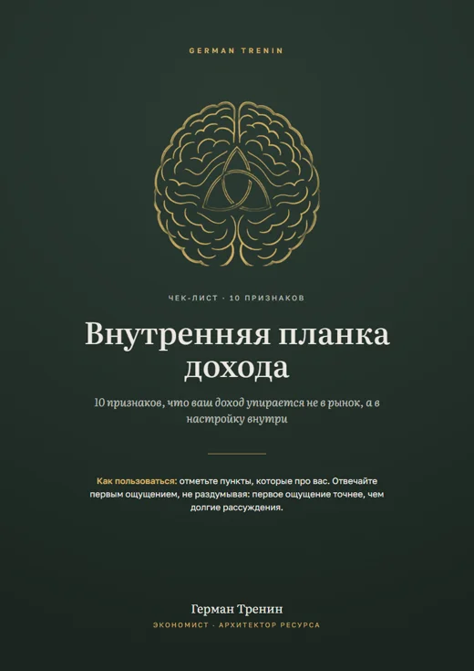
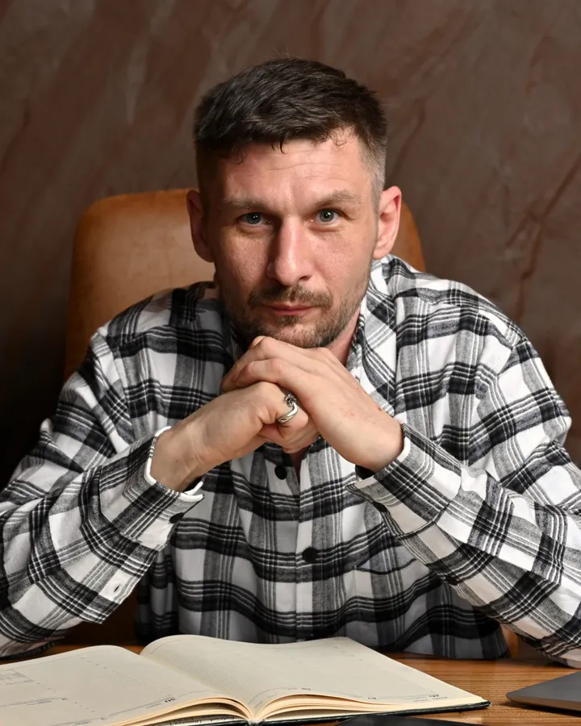

Ты так надёжно защитил себя от денег, что не справляются ни колдуны, ни коучи.
Деньги есть, пока вы держите их мёртвой хваткой. Стоит ослабить — всё рассыпается.
Годами книги, практики, стратегии. Результат держится, пока вы напрягаетесь, а на жизнь не остаётся ни сил, ни времени. Дело не в том, что вы мало стараетесь. Когда-то вы защитили себя от лёгких денег, и эта защита работает до сих пор. За одну сессию мы найдём, от чего именно вы защищаетесь.
Более 60 историй — у каждого свой запрос и своя найденная причина.
Смотреть видеоотзывы

Со стороны кажется, что у вас всё в порядке.
Только вы знаете, сколько сил уходит, чтобы это так выглядело.
- Доход дорастает до одной и той же суммы и дальше не двигается
- Деньги даются тяжело: вы работаете в постоянном перегрузе и не отдыхаете без чувства вины
- Проходите курсы и тренинги, а работаете так же, как раньше
- Новое даётся с трудом: в то, что могло бы приносить доход, никак не получается вникнуть
- Откладываете задачи, которые очевидно ведут к результату
- В разговоре с клиентом теряетесь, уступаете в цене или сливаетесь
- Тратите деньги на эмоциях, а потом жалеете
- Деньги рядом, но недосягаемы, как горизонт: идёте к ним годами, а расстояние не меняется
- Делаете всё правильно, но внутри будто каждая клетка знает, что ничего не получится
- Кажется, что обстоятельства работают против вас
Узнали себя хотя бы в двух строках? Значит, в подсознании стоят запреты, которые когда-то вас защищали. Их можно найти. На диагностике вы получите доступ к своей внутренней панели управления.
Что меняется после работы со мной
- Привычная сумма перестаёт быть пределом, и расти дальше становится проще
- Работа требует меньше напряжения, а отдых становится восстановлением
- Новые знания наконец превращаются в действия
- Внимание перестаёт уходить на внутреннюю борьбу, и новое осваивается легче
- Важные шаги перестают пугать, и вы делаете их без долгих отсрочек
- Вы спокойно называете свою цену и держите позицию
- Решения о деньгах становятся спокойнее, без покупок, о которых жалеете
- Появляется внутреннее право на эти деньги, и вы спокойно их принимаете
- Внутреннее «не получится» стихает, и вы действуете с ощущением, что результат возможен
- Вы начинаете замечать возможности там, где раньше видели только препятствия
German TreninГипнотерапевт · Экономист · Архитектор ресурса
Вы управляете многим. Кроме одной настройки
Скорее всего, вы уже пробовали: курсы, книги, коучинг, финансовые планы. Они дают знания, и знания работают. Доход ненадолго поднимается, а потом возвращается к знакомой сумме, как будто его кто-то держит.
Держат его ваши собственные решения, о которых вы давно забыли. Когда-то, в момент, когда было страшно, одиноко и помочь было некому, вы решили, как жить безопаснее: не высовываться, не просить, не рассчитывать на лёгкое. Эмоция той ситуации так и осталась неразрешённой, а решение продолжает работать. Так и выставляется планка. Вы смотрите на деньги, клиентов и возможности сквозь неё и даже не замечаете этого.
Поэтому знания и не помогают. Они обращаются к взрослому, который понимает, что делать, а решение принимал человек в совсем другом состоянии.
Диагностическая сессия длится до двух часов. За это время причины выходят на поверхность: вы видите, какие события и решения стоят за вашими трудностями с деньгами, и от чего вы до сих пор себя защищаете.
Вы впервые понимаете, где в вашей внутренней панели управления стоит запрет — и что с ним делать дальше. Уходите не с мотивацией на неделю, а с ясностью, которая остаётся.
Как это работает
Мы не уговариваем себя и не боремся с привычками. Мы меняем настройку там, где она выставлена.
Панель управления жизнью закрыта
И это правильно. Представьте, что при каждой смене настроения вы могли бы переставлять опоры фундамента своего дома. Одна вспышка злости или страха — и дом пошёл бы трещинами. Поэтому психика держит доступ закрытым.
Ресурсное состояние открывает доступ
Вы в ясном сознании и всё контролируете. Но в этом состоянии открывается ваша внутренняя панель управления: убеждения о деньгах, страхи, старые сценарии. Вы видите, что держит планку, и сами её переставляете.
Новая настройка работает сама
Сессия заканчивается, а новая настройка остаётся с вами: в решениях, в ценах, в отношении к деньгам и к отдыху. Её не нужно поддерживать усилием.
Что говорят люди после работы
Нажмите на лицо — видео откроется в маленьком окне, и его можно смотреть, листая страницу дальше.

Гипнотерапевт с экономическим образованием
Меня зовут Герман Тренин. Как экономист я знаю, что любой рост упирается в ограничения. Как гипнотерапевт я знаю, что самое жёсткое из них часто находится внутри человека. Я работаю там, где одно встречается с другим.
Мой путь начался с тела. Много лет я профессионально работал массажистом и видел, как боль, зажимы и напряжение возвращаются снова и снова. В какой-то момент я понял, что тело лишь показывает следствие. Причина — в страхах и настройках, которые человек не выбирал сознательно.
Сначала я прошёл этот путь сам: изучал причины и следствия, искал закономерности, переставлял собственные планки. Затем получил профессиональную подготовку и собрал знания и опыт в метод работы через ресурсное состояние психики.
Чтобы деньги приходили без борьбы и оставались без страха.
Telegram-канал «Архитектор ресурса»: разборы и упражнения о деньгах.
Нажмите на документ, чтобы рассмотреть его крупно
Как начать
Три шага. Первый ни к чему не обязывает.
Знакомство
Рассказываете о запросе. Я честно говорю, могу ли помочь. Если нет — так и скажу.
Диагностика
Открываем вашу внутреннюю панель и находим, где стоит планка и что её держит. Вы сами видите и чувствуете свои ограничения и уходите с ясным планом.
Программа
Серия сессий, чтобы переставить планку и закрепить новую настройку. Состав и срок определяем по итогам диагностики.

Бесплатный чек-лист
Внутренняя планка дохода
10 признаков, что ваш доход упирается не в рынок, а в настройку внутри. Отметьте, что про вас, — и станет понятнее, с чем именно стоит работать.
Бот пришлёт PDF после подписки на канал «Архитектор ресурса»: там разборы и упражнения о деньгах.
Частые вопросы
Я буду в сознании и смогу себя контролировать?
Да. Ресурсное состояние психики — это не сон и не отключение. Вы всё слышите, помните и в любой момент можете остановиться. Против своей воли вы ничего не скажете и не сделаете.
Это не эзотерика?
Нет. Никаких «денежных потоков», чакр и ритуалов. Мы работаем с убеждениями и реакциями, которые вы сами видите во время сессии и потом замечаете в своих решениях.
Чем это отличается от работы с психологом?
Психолог часто помогает осознать ситуацию и выработать к ней новое отношение. Мы работаем глубже: открываем внутреннюю панель управления и меняем саму настройку, из которой складываются ваши реакции и решения. Это не замена психологу или врачу, а другой инструмент.
Я уже пробовал курсы и коучинг. Почему это сработает?
Курсы и коучинг работают со знаниями и мотивацией. Планка выставлена глубже, там, куда знания не доходят. Мы работаем именно с ней.
Можно ли работать онлайн?
Да. Нужны спокойное место, наушники и стабильный интернет. Я работаю с клиентами из разных стран и подбираю время с учётом часового пояса.
Сколько стоит работа?
Ознакомительная беседа на 15 минут — бесплатно. Стоимость диагностики и программы зависит от запроса: её я называю на знакомстве, когда понимаю вашу ситуацию. Без скрытых платежей.
Есть ли противопоказания?
Да. Работа в ресурсном состоянии психики не заменяет медицинскую и психиатрическую помощь. Я не работаю с острыми психическими состояниями, психозами и эпилепсией. В таких случаях направляю к врачу. Полный список противопоказаний

Узнайте, что держит ваш доход. Одна сессия — и вы видите причину
Выберите удобное время — бот в Telegram покажет свободные окна и сразу запишет вас. 15 минут, бесплатно: вы расскажете о запросе, а я честно скажу, чем могу помочь.
Будни, 15:00–22:00 по Москве
Удобнее переписка? Написать в WhatsApp — отвечаю в течение дня.
Если по какой-либо причине вы не можете открыть мессенджер и связаться со мной, напишите на почту: germanproff148 (собака) gmail.com
Смотрите с компьютера? Наведите камеру телефона на нужный код.